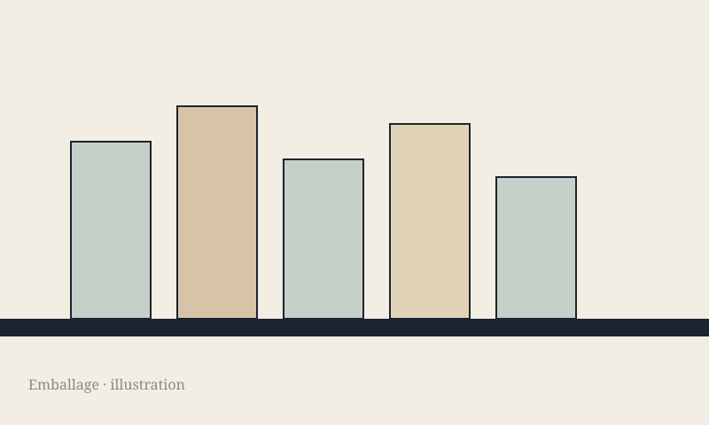

Historie
82 grubehuse ved Søften
Moesgaard har afdækket et tekstilværksted på 100.000 m².

Krimi
Anklagemyndigheden siger, at han som 15-årig kom fra Linköping til en lejlighed i Værløse. Politiet anholdt ham, før der blev skudt. Tre danskere er medtiltalte. Alle nægter.
Historie
Moesgaard har afdækket et tekstilværksted på 100.000 m².

Feature
Musk sagde det på Teslas regnskabskonference. EU-godkendelse mangler.

Kommentar
Emballageafgiften kan stadig flytte sig over disken.
Politik
To rapporter. Ingen folkedrabsdom.
Økonomi
UM: 80,6 milliarder besluttet siden 2022.
Guide
Lys, koffein, køligt rum.
Kommentar
Merz vil have vælgerne, ikke partiet.
Et brev, når der er stof.